エヴァガイド - スキル、タリスマン、チーム編成 | ヒーローウォーズ アライアンス
- 投稿者: Alexandre Domingos
エヴァは、倒しやすい敵を少しずつ削るために戦うヒーローではありません。狙いを定めて待ち、敵の最大HPそのものを弱点へ変えます。進歩の道に属するこの射撃手は、前方のタンクと後方に隠れた敵の両方を脅かします。
とりわけ強力なのが、ほかの射撃手と生み出す連携です。エヴァは味方のダメージを増やし、その一部を遠くにいるマーク対象へ転送します。さらに、レジェンダリー遺物を育てるほど危険度が増します。このガイドでは、その強さの仕組みと効果的な育成方法を解説します。
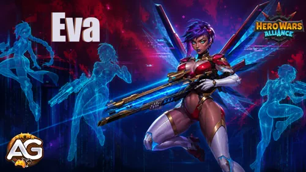

エヴァガイド目次
- エヴァとは？
- エヴァの総合評価
- エヴァの長所と短所
- タリスマン装備時の最大ステータス
- タリスマンガイド
- レジェンダリー遺物スキルの強化優先度
- おすすめスキンと強化優先度
- アーティファクトの強化優先度
- グリフの強化優先度
- エヴァ対策
- エヴァと相性の良いヒーロー
- エヴァのおすすめチーム
- まとめ
ヒーローウォーズ アライアンスのエヴァとは？
エヴァは進歩の道に属する後衛の射撃手です。彼女の特徴は敵陣の両端を狙えることにあります。アルティメットは通常タンクである最も近い敵を狙い、フォーカシング・スコープは最も遠い敵にマークを付け、味方の射撃手が与えたダメージの一部をその対象にも与えます。
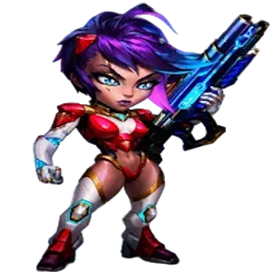
- メインクラス: 射撃手
- 役割: 射撃手
- 配置: 後衛
- メインステータス: 素早さ
- 所属: 進歩の道
- 領域バフ: 射撃手の攻撃力・防御力 +120%
- ソウルストーンの入手方法: 現在、常設の入手先はありません。
- 相性: ネブラ、アイザック、ジャッジ、ジュリアス、すべての射撃手
- ヒドラ評価: 検証が必要です。
エヴァ最大の強みは、割合ダメージによる圧力です。インポッシブル・ショットは最も近い対象の最大HPに応じた追加ダメージを与え、遺物レベル30で解放されるエクスプローシブ・ペイロードは、条件を満たすダメージを与えるたびに最大HP依存のダメージをさらに追加します。そのため、高HPのタンクは時間をかけて突破する壁ではなく、むしろ格好の標的になります。
ただし、検証前の段階でヒドラ戦の決定打になると断言するのは早計です。ヒドラはデバフに耐性がありますが、エヴァの説明文ではデバフではなく追加物理ダメージと記載されています。仕様上は有望に見えるものの、実戦結果を確認してからヒドラ評価を決めるべきでしょう。
エヴァの長所と短所 - ヒーローウォーズ アライアンス
✅ 長所
- 割合物理ダメージにより、高HPのタンクへ非常に大きな圧力をかけられる。
- 最も近い敵と最も遠い敵の両方を狙い、敵陣の前後へ攻撃できる。
- 味方の射撃手全員のダメージを増加させ、特に遠距離の対象に強い。
- フォーカシング・スコープにより、別の敵を攻撃しながらマークした後衛にも圧力をかけられる。
- アンチウイルスが定期的にコントロール効果を解除し、短時間のコントロール無効を付与する。
❌ 短所
- インポッシブル・ショットは発射前に3秒間狙いを定める必要がある。
- 自身はほとんどコントロール能力を持たない。
- 繰り返し射撃できるまで生き残るには、守り、回復、シールドによる支援が必要。
- チームへの強力な貢献の一部は、ほかの射撃手と組ませることが前提になる。
- ヒドラでの性能や耐性との相互作用は、実戦での検証が必要。
エヴァ - タリスマン装備時の最大ステータス
| ステータス | |
|---|---|
 素早さ 素早さ | 15,547 |
 知力 知力 | 2,046 |
 力 力 | 2,771 |
 HP HP | 614,927 |
 物理攻撃 物理攻撃 | 109,614 |
 魔法攻撃 魔法攻撃 | 6,138 |
 アーマー アーマー | 15,967 |
 魔法防御 魔法防御 | 3,879 |
 アーマー貫通 アーマー貫通 | 34,438 |
 クリティカルヒット率 クリティカルヒット率 | 10,189 |
 ダメージ増加 ダメージ増加 | 7,307 |
エヴァのタリスマンガイド - ヒーローウォーズ アライアンス
現在エヴァに用意されているタリスマンは、候補者のタリスマン1つです。解放済みのボーナスが常に有効になるスキンとは異なり、戦闘でステータスが反映されるのは装備中のタリスマンだけです。現時点では選択に迷いませんが、競合がないこと以上に、このタリスマンがエヴァと噛み合う理由が重要です。
1番目 - 候補者のタリスマン
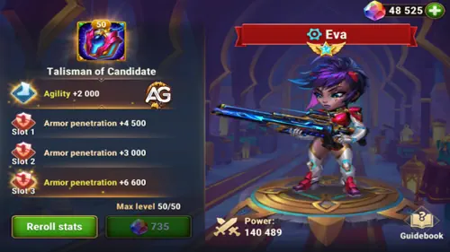
メインステータス枠: 素早さ +2,000。素早さはエヴァのメインステータスなので、物理攻撃 +6,000とアーマー +2,000も得られます。
再抽選枠: 3枠それぞれにアーマー貫通 +6,600が付き、合計の再抽選ボーナスはアーマー貫通 +19,800です。
| タリスマン | メインステータス合計 | 再抽選ボーナス合計 | メインステータスから得るボーナス |
|---|---|---|---|
候補者のタリスマン |
素早さ +2,000 |
アーマー貫通 +19,800 |
物理攻撃 +6,000 アーマー +2,000 |
| スロット1 | スロット2 | スロット3 | 再抽選ボーナス合計 |
|---|---|---|---|
+6,600 |
+6,600 |
+6,600 |
+19,800 |
アレクサンドレのヒント: このタリスマンはエヴァの攻撃性能とよく噛み合います。素早さは各物理ダメージスキルを強化し、アーマー貫通は最大HP依存ダメージで狙いたいタンクに攻撃を通しやすくします。追加アーマーは控えめですが、3秒間狙いを定める間の耐久を補えるのも利点です。
エヴァのレジェンダリー遺物スキル強化優先度 - ヒーローウォーズ アライアンス
エヴァの各射撃、射撃手へのバフ、レジェンダリー遺物の強化内容を確認し、最初の解放からレベル30までの明確な優先順位を紹介します。
基本スキルの推奨優先度: 1. マークスマン・ユニティ、2. インポッシブル・ショット、3. フォーカシング・スコープ、4. ピアシング・ショット。以下の一覧では、ゲーム内の表示順にスキルを掲載しています。
レジェンダリー遺物の強化順: レベル1でアンチウイルス、レベル10でインポッシブル・ショット強化、レベル20でピアシング・ショット強化、レベル30でエクスプローシブ・ペイロードを解放します。解放順は固定されており、特にレベル10と30で攻撃性能が大きく伸びます。
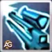
1番目 - インポッシブル・ショット（基本スキル）
ゲーム内説明: 3秒間狙いを定めた後、最も近い敵を射撃し、物理ダメージに加えて対象の最大HPの25%に相当する追加物理ダメージを与えます。
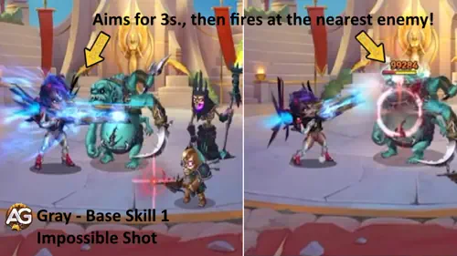
スキル解説: エヴァは3秒かけて狙いを定め、最も近い敵へ強烈な一撃を放ちます。準備時間には危険が伴いますが、249,228の物理ダメージ（物理攻撃に依存）に加えて、対象の最大HPの25%を追加物理ダメージとして与えます。後半のダメージはエヴァではなく敵のHPに応じて増えるため、タンクなど高HPのヒーローほど狙い目になります。
タリスマン1「候補者のタリスマン」装備時の計算式
- 計算式1: 物理ダメージ: 249,228（物理攻撃に依存）
- 計算式2: 追加物理ダメージ: 対象の最大HPの25%
スキル情報
- 照準時間: 3秒
- 対象: 最も近い敵
- キーワード: 物理ダメージ、最大HPダメージ
強化優先度: 非常に高い - エヴァの主力バーストスキルであり、高HPの前衛に対する最も明確な対抗手段です。単体火力の核となるため、早めに強化しましょう。
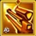
レジェンダリー1番目 - インポッシブル・ショット（強化スキル、遺物レベル10）
ゲーム内説明: 追加物理ダメージが増加し、対象の最大HPの50%になります。
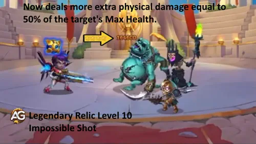
スキル解説: レジェンダリー強化により、インポッシブル・ショットの最大HP依存部分が25%から対象の最大HPの50%へ上昇します。別枠で50%が追加されるのではなく、元の割合が強化されます。ここからエヴァの対タンク性能が一気に脅威となります。
タリスマン1「候補者のタリスマン」装備時の計算式
- 計算式1: 基本物理ダメージ: 249,228（物理攻撃に依存）
- 計算式2: 強化後の追加物理ダメージ: 対象の最大HPの50%
スキル情報
- 遺物レベル: 10
- 照準時間: 3秒
- 対象: 最も近い敵
- キーワード: 物理ダメージ、最大HPダメージ、レジェンダリー強化
強化優先度: 非常に高い - まず遺物レベル10を大きな目標にしましょう。対象の最大HPに応じたダメージが25%から50%へ倍増し、エヴァの対タンク火力が最初に大きく跳ね上がります。
遺物レベル10の解放情報
| 情報 | 値 |
|---|---|
| 必要な遺物の欠片 (レベル 1-10) |  280 |
| 必要な遺物の欠片の合計 (レベル 0-10) | 330 |
| 物理攻撃ボーナス合計 (レベル 0-10) | +7,876 |
| HPボーナス合計 (レベル 0-10) | +39,459 |
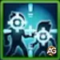
2番目 - フォーカシング・スコープ
ゲーム内説明: 最も遠い敵を攻撃し、9.0秒間「マーク」を付与します。マーク中の対象は、味方の射撃手がほかのヒーローに与えたダメージの一部を追加で受けます。
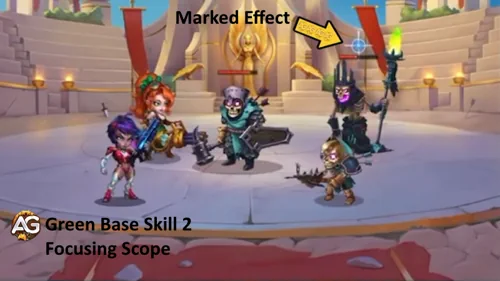
スキル解説: エヴァは前衛を越えて最も遠い敵を撃ち、74,768の物理ダメージ（物理攻撃に依存）を与えます。対象には9秒間マークが残り、味方の射撃手がほかのヒーローに与えたダメージの50%を共有ダメージとして受けます。そのため射撃手編成では、タンクを攻撃しながら危険な後衛にもダメージを与え続けられます。
タリスマン1「候補者のタリスマン」装備時の計算式
- 計算式1: 物理ダメージ: 74,768（物理攻撃に依存）
- 計算式2: 共有ダメージ: 条件を満たす味方射撃手のダメージの50%
スキル情報
- マーク持続時間: 9秒
- 対象: 最も遠い敵
- キーワード: 物理ダメージ、マーク、共有ダメージ、射撃手シナジー
強化優先度: 高い - 直接ダメージはアルティメットより低いものの、9秒間のマークによってチーム全体の圧力を大きく高められます。複数の射撃手と組ませる場合は早めに強化しましょう。
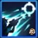
3番目 - ピアシング・ショット（基本スキル）
ゲーム内説明: 狙いを定め、自分より前方にいるすべての敵を射撃します。
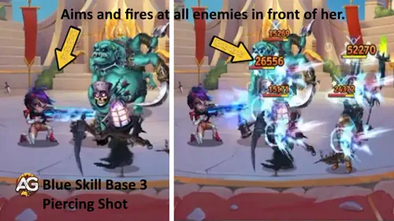
スキル解説: ピアシング・ショットは、エヴァのシンプルな範囲攻撃です。前方を狙い、自分より前にいるすべての敵へ91,210の物理ダメージ（物理攻撃に依存）を与えます。敵が複数並んでいれば、1回の発動で複数の対象を攻撃できるため価値が高まります。
タリスマン1「候補者のタリスマン」装備時の計算式
- 計算式1: 敵1体あたりの物理ダメージ: 91,210（物理攻撃に依存）
スキル情報
- 対象: エヴァより前方にいるすべての敵
- キーワード: 物理ダメージ、範囲ダメージ
強化優先度: やや高い - 有用な範囲攻撃ですが、インポッシブル・ショットの最大HP依存ダメージや、射撃手へのチームバフほど決定的ではありません。まずはエヴァの核となるスキルを優先しましょう。
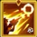
レジェンダリー3番目 - ピアシング・ショット（強化スキル、遺物レベル20）
ゲーム内説明: このスキルが命中した敵1体につき、エネルギーを30回復するようになります。
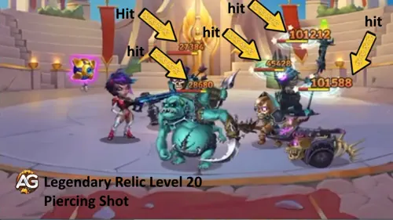
スキル解説: ピアシング・ショットが命中した敵1体につき、エヴァはエネルギーを30回復します。1体なら30、3体なら90、5体なら150回復します。スキル自体の表示ダメージが増えるわけではありませんが、インポッシブル・ショットをより早く発動できます。位置取りが良ければ、範囲攻撃をアルティメットの回転速度向上につなげられます。
タリスマン1「候補者のタリスマン」装備時の計算式
- 計算式1: 敵1体あたりの物理ダメージ: 91,210（物理攻撃に依存）
- 計算式2: エネルギー回復量: 30 × 命中した敵の数
スキル情報
- 遺物レベル: 20
- 対象: エヴァより前方にいるすべての敵
- エネルギー: 命中した敵1体につき30
- キーワード: 物理ダメージ、範囲ダメージ、エネルギー回復
強化優先度: 高い - エネルギー回復によってエヴァの最強スキルを早く発動でき、敵が多いほど効果も高まります。遺物レベル10の次に目指す価値の高い強化です。
遺物レベル20の解放情報
| 情報 | 値 |
|---|---|
| 必要な遺物の欠片 (レベル 10-20) | 800 |
| 必要な遺物の欠片の合計 (レベル 0-20) | 1,130 |
| 物理攻撃ボーナス合計 (レベル 0-20) | +21,711 |
| HPボーナス合計 (レベル 0-20) | +108,779 |
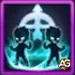
4番目 - マークスマン・ユニティ
ゲーム内説明: エヴァと味方の射撃手全員が与えるダメージを増加させます。ボーナスは対象までの距離に応じて増え、元のダメージの最大400%に達します。
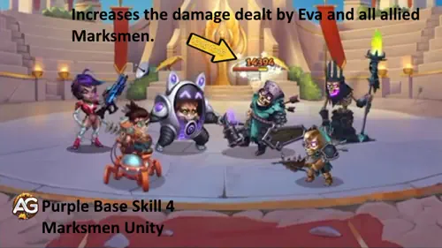
スキル解説: このパッシブにより、対象までの距離がエヴァのダメージ計算に加わります。エヴァと味方の射撃手は、それぞれの攻撃者と対象との距離に応じて、元のダメージの最大400%まで個別にボーナスを得ます。ほかのヒーローがエヴァの距離計算を共有するわけではなく、射撃手ごとに距離が判定されます。射撃手のレベルが120を超える場合、発動率は低下します。
タリスマン1「候補者のタリスマン」装備時の最大効果
- 最大ダメージ増加: 元のダメージの最大400%
- 距離計算: エヴァと味方の各射撃手について個別に計算。
スキル情報
- 種類: パッシブ
- 対象となる味方: エヴァと味方の射撃手全員
- キーワード: ダメージ増加、距離による強化、射撃手シナジー
強化優先度: 非常に高い - エヴァにとって最も重要なチームスキルです。自身と味方の射撃手全員のダメージを伸ばせるため、基本スキルの中でも最優先で最大まで強化したいスキルです。
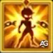
5番目 - アンチウイルス（新スキル、遺物レベル1）
ゲーム内説明: 8秒ごとに、エヴァに付与されているすべてのコントロール効果を解除し、5.0秒間新たなコントロール効果を無効にします。
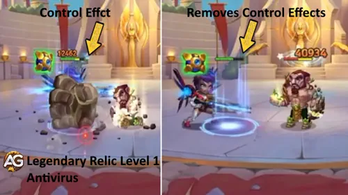
スキル解説: アンチウイルスはエヴァに周期的な防御手段を与えます。8秒ごとに自身のコントロール効果をすべて解除し、5秒間新たなコントロール効果を無効にします。特にインポッシブル・ショットの3秒間の照準を完了したい場面で重要ですが、通常のダメージを防ぐ効果はありません。
スキル情報
- 遺物レベル: 1
- 発動間隔: 8秒ごと
- コントロール無効時間: 5秒
- キーワード: 効果解除、コントロール無効
強化優先度: 高い - アンチウイルスを解放すると、コントロール編成に対するエヴァの安定性がすぐに高まります。ただし重要な防御手段ではあるものの、シールド、回復、ダメージ軽減は引き続き味方から補う必要があります。
遺物レベル1の解放情報
| 情報 | 値 |
|---|---|
| 必要な遺物の欠片 (レベル 0-1) | 50 |
| 必要な遺物の欠片の合計 (レベル 0-1) | 50 |
| 物理攻撃ボーナス合計 (レベル 0-1) | +4,257 |
| HPボーナス合計 (レベル 0-1) | +21,329 |
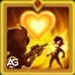
6番目 - エクスプローシブ・ペイロード（新スキル、遺物レベル30）
ゲーム内説明: エヴァが対象にダメージを与えるたびに、対象の最大HPの10%分だけダメージが増加します。継続ダメージと共有ダメージには適用されません。
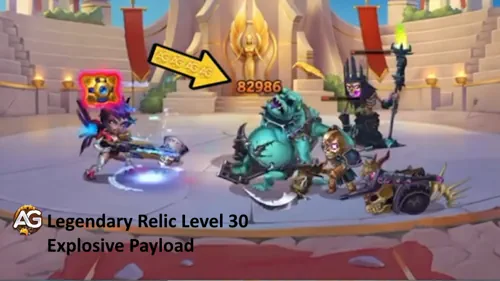
スキル解説: エクスプローシブ・ペイロードは、エヴァが条件を満たすダメージを与えるたびに対象の最大HPの10%を追加します。継続ダメージや共有ダメージでは発動しないため、フォーカシング・スコープで転送される50%のダメージにペイロードが重ねて加算されることはありません。この制限があっても、直接攻撃を繰り返すことで耐久力の高い敵に大きな効果を発揮し、エヴァの遺物終盤で最も強力な強化となります。
タリスマン1「候補者のタリスマン」装備時の効果
- 計算式1: 追加物理ダメージ: 条件を満たすダメージ1回につき対象の最大HPの10%
- 対象外: 継続ダメージと共有ダメージ。
スキル情報
- 遺物レベル: 30
- 発動条件: エヴァが対象に条件を満たすダメージを与える
- キーワード: 物理ダメージ、最大HPダメージ
強化優先度: 非常に高い - 遺物レベル30までの強化は高コストですが、エヴァのほぼすべての直接攻撃を強化します。対タンク火力を完成させたいプレイヤーにとっての最終目標です。
遺物レベル30の解放情報
| 情報 | 値 |
|---|---|
| 必要な遺物の欠片 (レベル 20-30) | 1,750 |
| 必要な遺物の欠片の合計 (レベル 0-30) | 2,880 |
| 物理攻撃ボーナス合計 (レベル 0-30) | +43,001 |
| HPボーナス合計 (レベル 0-30) | +215,429 |
エヴァのおすすめスキン - ヒーローウォーズ アライアンス
エヴァにはタンクを倒せるだけの火力と、長い照準を完了するまで耐えるHPの両方が必要です。以下ではゲーム内の表示順を保ちつつ、実戦への影響を基準に強化優先度を示します。
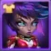
デフォルトスキン
ステータス: 素早さ +1,365。素早さはエヴァのメインステータスなので、最大まで強化すると物理攻撃 +4,095とアーマー +1,365も得られます。
スキンストーン費用: 素早さのスキンストーン 30,825個。
強化優先度: 非常に高い（総合1位） - 素早さはエヴァの各物理ダメージスキルを直接強化し、同時にアーマーも得られるため、インポッシブル・ショットの照準中に生き残りやすくなります。
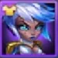
シンギュラリティスキン
ステータス: HP +106,645。
スキンストーン費用: 素早さのスキンストーン 50,410個。
強化優先度: 高い（総合2位） - エヴァは3秒間の照準中に無防備になりやすいため、追加HPによって発動を完了し、次のアンチウイルスまで生き残りやすくなります。ただし、火力を直接伸ばす効果はありません。
エヴァのアーティファクト強化優先度 - ヒーローウォーズ アライアンス
エヴァのアーティファクトは、物理バースト、クリティカルヒット、アーマー貫通、素早さを強化します。以下では表示順を保ちつつ、影響の大きいものから優先度を解説します。
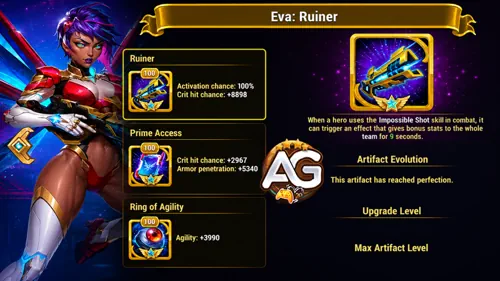
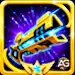
1番目のアーティファクト: ルイナー
レベル100の効果: エヴァがインポッシブル・ショットを使用すると、チーム全体のクリティカルヒット率が9秒間 +8,898。発動率: 100%。
強化優先度: 非常に高い（総合1位） - エヴァのアルティメットで最大の攻撃機会が始まり、ルイナーはまさにその瞬間にチーム全体のクリティカル率を高めます。射撃手を多く採用した編成では特に強力です。
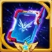
2番目のアーティファクト: プライム・アクセス
レベル100の効果: クリティカルヒット率 +2,967、アーマー貫通 +5,340。
強化優先度: 非常に高い（総合2位） - どちらのステータスもエヴァの役割に適しています。クリティカル率は瞬間火力を伸ばし、アーマー貫通は狙うべきタンクに直接物理ダメージを通しやすくします。

3番目のアーティファクト: 素早さの指輪
レベル100の効果: 素早さ +3,990。素早さはエヴァのメインステータスなので、物理攻撃 +11,970とアーマー +3,990も得られます。
強化優先度: 高い（総合3位） - 指輪は自身の能力を大きく伸ばしますが、ルイナーの全体バフとプライム・アクセスのアーマー貫通のほうが、通常は早い段階で戦闘への影響を実感できます。
エヴァのグリフ強化優先度
エヴァのグリフは火力と生存力のバランスを整えます。ゲーム内の表示順はそのままに、各直接攻撃をより危険にするステータスから優先して強化しましょう。
1番目のグリフ - 物理攻撃
レベル80のステータス: 物理攻撃 +8,340。
強化優先度: 非常に高い（総合2位） - インポッシブル・ショット、フォーカシング・スコープ、ピアシング・ショットはいずれも物理攻撃に応じてダメージが増えるため、エヴァの直接攻撃すべてを強化できます。
2番目のグリフ - アーマー貫通
レベル80のステータス: アーマー貫通 +12,850。
強化優先度: 非常に高い（総合1位） - エヴァは意図的に前衛タンクを狙うため、高い物理ダメージをアーマーの厚い対象へ実際に通すにはアーマー貫通が不可欠です。
3番目のグリフ - クリティカルヒット率
レベル80のステータス: クリティカルヒット率 +4,170。
強化優先度: 高い（総合4位） - クリティカルヒットはエヴァの物理攻撃に爆発力を加えます。物理攻撃、アーマー貫通、素早さを強化し、通常の一撃を安定して強くしてから育てましょう。
4番目のグリフ - HP
レベル80のステータス: HP +122,800。
強化優先度: やや高い（総合5位） - HPが増えるとインポッシブル・ショットを完了し、次のアンチウイルスまで生き残りやすくなります。ただし、シールドや回復は味方から補える一方、攻撃系グリフの代わりは用意しにくいため優先度は下がります。
5番目のグリフ - 素早さ
レベル80のステータス: 素早さ +2,110。素早さはエヴァのメインステータスなので、物理攻撃 +6,330とアーマー +2,110も得られます。
強化優先度: 高い（総合3位） - 素早さはダメージとアーマーを同時に伸ばせるため、物理攻撃とアーマー貫通に次いでバランスに優れたグリフです。
エヴァ対策 - ヒーローウォーズ アライアンス
エヴァは時間、妨害されない照準機会、予測しやすい標的を必要とします。対策として有効なのは、物理攻撃を当たりにくくするか、落ち着いてインポッシブル・ショットを準備できないよう後衛の防御を強いることです。

ダンテは味方全員の回避率を7秒間増加させ、重要な攻撃機会にエヴァの直接物理攻撃を当たりにくくします。回避に成功するたびに「報復」が発動する可能性もあり、エヴァのチームへ物理ダメージとノックバックで反撃できます。

ジューは遠距離の敵を狙うことができ、15秒後には最も遠い敵へマークを付け、通常攻撃がその対象にも命中するようになります。エヴァは通常後衛にいるため、最大HP依存の射撃を繰り返して戦況を決める前に倒される可能性があります。
エヴァと相性の良いヒーロー - ヒーローウォーズ アライアンス

アイザックは進歩の道の味方にシールドと物理攻撃支援を与えます。エヴァは通常彼より後ろに立つため、強力な物理攻撃を準備しながら、アイザックのアーマー貫通支援を活用できます。

ジャッジは陣形の前後にいる味方を守るため、エヴァのような後衛ヒーローと好相性です。シールドが3秒間の照準完了を助け、スタンによってチームに安全な攻撃時間を作ります。

ジュリアスはシールドとバフを通じて、エヴァに必要な前衛の守りを提供します。クリティカルヒット率を上げる武器アーティファクトも、エヴァのバースト火力とマークスマン・ユニティの恩恵を受けるほかの射撃手を強化します。

ララ・クロフトも射撃手なので、エヴァの距離依存ダメージ増加を受けられます。ララのダメージはフォーカシング・スコープにも反映されるため、2人で目の前の敵を攻撃しながら、エヴァがマークした後衛へ圧力をかけ続けられます。

ネブラはエヴァの攻撃テンポを高め、有害な効果の解除も支援します。エヴァの攻撃速度を上げ、インポッシブル・ショット、フォーカシング・スコープ、ピアシング・ショットを繰り返せるまで戦闘能力を維持しやすくします。

ポラリスは別の射撃手ほど直接エヴァを強化しませんが、コントロール効果で敵の動きを止められます。その隙にエヴァはインポッシブル・ショットの照準を完了でき、ほかの味方も後衛を守る時間を得られます。
2026年版エヴァのおすすめチーム - ヒーローウォーズ アライアンス
以下の2編成は、エヴァの長い照準時間を守り、射撃手へのバフを最も近いタンクと最も遠い敵の両方への圧力に変えます。
チーム1 - 進歩の道による守りと速度
アイザック、ネブラ、ジャッジ、ジュリアスが、シールド、バフ、効果解除、攻撃テンポの向上でエヴァを支えます。エヴァを生存させ、インポッシブル・ショットを繰り返すことを優先するなら、こちらがより安全な編成です。
エヴァの推奨タリスマン: 候補者のタリスマン。
チーム2 - 射撃手2人による圧力
ネブラの代わりにララ・クロフトを採用し、エヴァと射撃手を2人編成します。マークスマン・ユニティがララの距離依存ダメージを高め、フォーカシング・スコープが条件を満たすララのダメージの一部を、最も遠いマーク対象へ転送します。アイザック、ジャッジ、ジュリアスが2人のダメージディーラーを守ります。
エヴァの推奨タリスマン: 候補者のタリスマン。
| エヴァのおすすめチーム2026 #2 | ||||
|---|---|---|---|---|
|
|
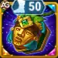 タリスマン1 |
|
|
|
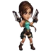 ララ・クロフト |
||||
エヴァガイドまとめ
エヴァは敵陣を前後両面から脅かします。インポッシブル・ショットは最も近い高HPの対象を攻撃し、フォーカシング・スコープは最も遠いヒーローを危険にさらし、マークスマン・ユニティは遠距離から攻撃するチームを強化します。3秒間の照準があるため扱いは簡単すぎませんが、その弱点がシールド、回復、発動タイミングの重要性を高めています。
安定したビルドを目指すなら、アーマー貫通と物理攻撃を伸ばし、候補者のタリスマンを装備して、進歩の道の守り役または別の射撃手と組ませましょう。遺物レベル10で最初の大きな対タンク強化を獲得し、レベル30では条件を満たすほぼすべての攻撃に最大HP依存ダメージが加わり、ビルドが完成します。
アレクサンドレの最終評価: エヴァは、非常に高い対タンク性能と後衛への圧力を備え、育成次第で大きく伸びる射撃手です。進歩の道や射撃手編成なら投資する価値があります。ただしヒドラ評価については、最大HP依存ダメージの挙動を実戦で検証できるまで保留とします。
注目ガイドで新しいスキルを学ぼう！

ご意見をお聞かせください！
エヴァガイドはいかがでしたか？ 分かりにくかった点、共有したいチーム、検証してほしい対戦相手があれば、Alexandre Games Blogのコメント欄でぜひ教えてください。
下のボタンをクリックしてコメントを始めましょう。